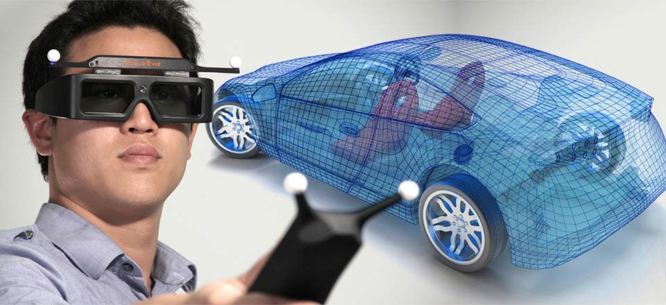

Applications
Use cases
Many people often use Augmented Reality without even noticing. Snapchat filters, Apple Memoji(iPhone X or newer), Samsung AR-Emoji, Pokemon Go, Ingress, Harry Potter Wizards Unite, Jurassic World Alive, the things you see in the football on tv are all AR applications you use all day. Some of you may even transalted text from an image or an package wit google translater "Word Lens" feature. Google Maps now has a feature where you can see the street names in real time on your phone screen or you see where you have to go on the ground infront of you. Your camera probably has a live view finder - you guessd it thats AR. With Augmented Reality you can see the Colosseum in its full beauty or you just look at paintings from all sides, even when its unfinshed. Architect use it to check if the plan matches the real surroundings.
AR in retail may act to bring better customer engagement and retention, as well as brand awareness and more sales. Some features may also help customers make wiser purchases – providing product data with 3D models of any size or color. Real-estate can also benefit from Augmented Reality via 3D tours of apartments and houses, that can also be manipulated to amend some parts.
Future use cases
In the future AR could replace computer screens and the windows and icons would just float infront of you in the air. You could have a lens that replaces your smartphone. Augmented reality also gives users the ability to practice different forms of social interactions with other people in a safe, risk-free environment.